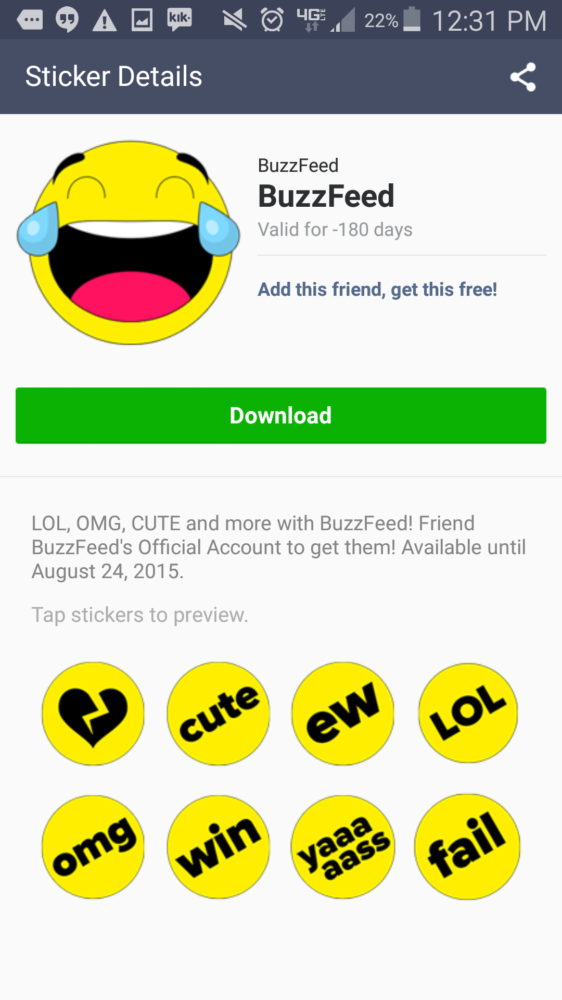
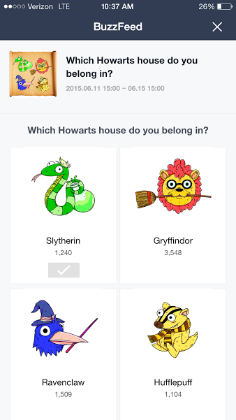
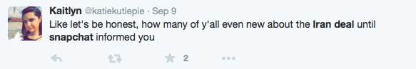
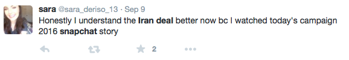

image
Acknowledgements *We would like to thank all the journalists and editors, as well as those representatives from various chat app companies, who spoke to us during the research phase of this report. We list many of them by name in a following chapter, but there were a number of others not mentioned specifically who contributed necessary background briefings and guidance. Many thanks, too, to Claire Wardle, Pete Brown, Elizabeth Boylan, and Abigail Ronck from the Tow Center for their help with feedback, logistics, and proofreading. November, 2015
Messaging apps now have more global users than traditional social networks—which means they will play an increasingly important role in the distribution of digital journalism in the future. While chat platforms initially rose to prominence by offering a low-cost, web-based alternative to SMS, over time they evolved into multimedia hubs that support photos, videos, games, payments, and more.
While many news organizations don't yet use messaging apps, digitally savvy outlets like BuzzFeed, Mashable, The Huffington Post, and VICE have accompanied a more traditional player in BBC News by establishing a presence on a number of these platforms.
To complement our research, we interviewed leadership at multiple news outlets and chat platforms, thereby synthesizing key lessons and presenting notable case studies reflecting the variety of creative and strategic work taking place within the messaging space. Most publisher efforts around messaging apps are still in a formative, experimental stage, but even those have often proven effective in diversifying traffic sources for digital content.
Drawing upon our interviews and case studies, we identify a number of opportunities and challenges for organizations using—or hoping to use—messaging apps for news. We argue that to devise a successful messaging app strategy, publishers must understand regional strongholds, user demographics, and popular features of each app. Advantages to the chat ecosystem include huge, untapped audiences; high engagement through push notifications; unique products like stickers and “chatbots” (see glossary for definitions); and the opportunity to build community through chat rooms and crowdsourced storytelling. Meanwhile, challenges include limited analytics tools and a fragmented social landscape boasting roughly a dozen messaging apps, each with over 50 million registered users.
Our case studies illustrate a number of ways in which major news outlets have utilized various messaging apps, each with its own niche characteristics. In the past two years, many platforms—including Snapchat, Viber, Kik, LINE, WeChat, and Telegram—introduced official channels that publishers like CNN, The New York Times, The Huffington Post, and Cliff Central now leverage for content distribution and user engagement. Other players, like WhatsApp, have no official offering for media owners, but this has not deterred organizations—most notably the BBC—from launching experimental campaigns.
Our research indicates that one of the greatest benefits of chat apps is the opportunity to use these platforms as live, sandbox environments. The chance to play and iterate has helped several news organizations develop mobile-first content and experiential offerings that would have proved difficult in other digital environments. As these services primarily—and in some cases exclusively—exist on mobile phones, editorial teams have learned to focus purely on the mobile experience, freeing themselves from considerations about how content will appear on desktop websites or other broadcast mediums.
As happened after the early days of social media, before which a proliferation of services (some with regional strengths) led to intense competition for user attention, we expect to see some eventual consolidation among chat apps. While Facebook Messenger and Skype do not garner much focus in this report, we believe they could become significant players in this space over the coming year as they figure out the right proposition for their platforms to partner with media organizations.
Elsewhere, we conclude that issues around information, privacy, personal security, and mobile data penetration will unfold in different ways around the world; apps like Telegram and FireChat are among those at the forefront of addressing and solving these problems. They, in conjunction with similar applications, are likely to see an increase in user uptake as they meet needs that other major chat apps are unable to serve.
In developing editorial strategies for some of these wide-ranging messaging platforms, news organizations are not just helping to future-proof themselves, they are also venturing into online spaces that could enable them to reach hundreds of millions of (often young) people with whom they have never engaged before.
The key findings of this report can be summarized as follows:
Messaging apps offer strong opportunities to engage new or difficult-to-reach demographics. For example, Snapchat, a very popular app among millennials, has been credited with engaging and informing young audiences on complex issues like the Iran nuclear deal.
Innovations such as bespoke (or customized) stickers and emojis can help news outlets quickly build significant audiences via messaging apps.
Messaging apps enable news outlets to gather (potentially exclusive) user-generated content and can become a major source during breaking news situations (e.g., as in the BBC's coverage of the second Nepal earthquake in 2015).
News outlets may need to experiment with a variety of chat apps to decipher which content type best suits the audiences of each app. BuzzFeed, for example, had considerably more success using LINE for soft news than for hard news.
Messaging apps can provide unique opportunities for giving audiences direct access to content and publishers, be it through tailormade WeChat platforms (Cliff Central) or Public Chats on Viber (The Huffington Post).
Messaging apps provide a space for news outlets to engage their audiences with different—possibly lighter—types of content (e.g., The Washington Post has used Kik to distribute games, quizzes, and chat adventures).
Even apps that are not as geared toward publishing as some of their competitors, such as WhatsApp, hold great potential for news outlets if used strategically.
Messaging apps not only facilitate communication with eyewitnesses in areas where other forms of communication aren't functioning (e.g., during extreme weather conditions), they can also provide a platform for people who don't feel safe speaking on the telephone. Additionally, apps such as Telegram focus strongly on encryption and security.
Messaging apps are not used solely to drive traffic to websites (e.g., BuzzFeed is using LINE as part of a more distributed strategy and aims to provide as much information as possible inside the app, rather than direct users to its website).
When sourcing user-generated content, apps like WhatsApp, which are tied to a user's phone number, can significantly speed up the verification process as they provide a direct line to the content creator/eyewitness.
Messaging apps are relatively new and evolving at a rapid pace. Consequently, many news outlets are still in the process of establishing strategies to best utilize these platforms.
There is emerging evidence that messaging apps may drive traffic back to outlets' other, more traditional platforms (e.g., CNN's Snapchat Discover drove people to seek out longer-form content on CNN's TV news channel).
“The social media phase of the Internet ended,” declared Fred Wilson—a leading venture capitalist and early investor in Twitter, Foursquare, and Tumblr—in his 2014 “What Just Happened?” year-in-review. He continued:
Entrepreneurs and developers still build social applications. We still use them. But there isn't much innovation here anymore…messaging is the new social media…families use WhatsApp groups instead of Facebook. Kids use Snapchat instead of Instagram. Facebook's acquisition of WhatsApp in February of this year was the transaction that defined this trend.1
image
While Wilson's views may be surprising to some, statistics support them. Business Insider Intelligence released an infographic in April titled “Messaging Apps Have Caught Up to Social Networks,” indicating that major chat apps (WeChat, Viber, WhatsApp, and Facebook Messenger) now have more combined users than the top social networks (Twitter, LinkedIn, Facebook, and Instagram).2 And according to Mary Meeker's “Internet Trends 2015” report, messaging apps make up 60 percent of the top 10 global apps by both usage and number of sessions.3 Like any presumed overnight success, WhatsApp's rise was actually part of a broader movement that took years to coalesce within a zeitgeist moment. Facebook's $22-billion purchase of the app merely marked the day that everyone, even those with limited interest in technology, learned that the era of social messaging had arrived.
Any user now downloading the world's 10 biggest chat apps for the first time may be struck by their similarities. Dig deeper into their histories, though, and you'll see that each company conquered the globe with one unique, core innovation before incorporating some of its competitors' strongest ideas: LINE popularized stickers, Viber perfected free mobile calling, Snapchat invented ephemeral messaging, Kik pioneered mobile chat anonymity, Telegram supplied chat encryption, Tango delivered mobile video chat, WhatsApp introduced the simplicity of free texting, and WeChat created the messaging app as mobile web portal. Facebook Messenger, for its part, forged an amalgam of all those apps, and now looks to differentiate itself with the introduction of M, an artificial intelligence chat assistant.
In this guide, we explore the critical role chat apps can play in the distribution of digital journalism today and in the years ahead. As mobile traffic and referrals from social platforms continue to grow for the majority of news organizations, chat apps present a profound opportunity for audience development and engagement.
According to Pew Research Center's “State of the News Media 2015” report, 78 percent of the top 50 digital news websites receive more visits from mobile devices than desktop computers. And analytics firm Parse.ly, which delivers audience insights to over 400 news organizations including Wired, The Atlantic, and Reuters, claims 43 percent of referrals to its publisher network now come from social media (outpacing search at 38 percent).
Messaging has emerged as the new frontier of social on mobile, and the sheer size of audiences on the top global chat apps is too big to ignore. These apps also present an opportunity to diversify mobile traffic sources and to minimize vulnerability should Facebook or other platforms decrease traffic for publishers.
For our research, we conducted interviews with leadership at numerous major messaging app companies, as well as early-adopter news organizations. We selected companies and case studies that demonstrate the diversity of opportunities within the ecosystem, while also highlighting the uniqueness of each chat app platform.
While publishers generally indicated optimism and excitement for their work on chat apps, nearly all pointed out that as an industry we are still in an early, exploratory phase. Most major chat apps spent the last few years perfecting their user experience, only recently turning their attention to media-owner partnerships. With that in mind, we urge readers to not only learn from the case studies presented, but also to initiate experiments of their own to find the right strategy for any editorial team.
Modern instant messaging and SMS both began their march to prominence in the early and mid-1990s. The difference between the two is subtle: SMS (the acronym for “short service message”) allows mobile phone users to send each other text messages without an Internet connection, whereas instant messaging enables similar functionality via the web. The first SMS message was sent over the Vodafone GSM network in the United Kingdom on December 3, 1992, with the words “Merry Christmas.” Israeli firm Mirabilis released the first widely used online messenger, ICQ (short for “I Seek You”), in 1996.
Precursors to ICQ date as far back as 1961 when MIT's Computation Center built the Compatible Time Sharing System (CTSS), allowing up to 30 users to log-in concurrently and share text messages. CompuServe's CB Simulator, released in 1980, is generally recognized as the first dedicated online chat service; it required users to pay monthly fees for membership.
In 1985, Commodore launched Quantum Link (or “Q-Link”), an online service for Commodore 64 and 128 that enabled multi-person chat, file sharing, electronic email, games, and news via modem connection. Quantum Link changed its name to America Online (AOL) in 1991, and by the mid-90s was the leading U.S. Internet service provider and portal to the web.
The company launched AOL Instant Messenger (AIM) in 1997 and purchased competitor ICQ in 1998 to consolidate its primacy over instant messaging. Along with a few competitors, it also pioneered chat robots like StudyBuddy and SmarterChild that provided information and played games with users.
In 2006, AIM controlled 52 percent of the instant messaging market, but it struggled to monetize and went into rapid decline in the face of competition from services like Google Talk, Yahoo! Chat, MSN Messenger, and Skype. The growing popularity of BlackBerry Messenger in the late 2000s also pointed to a bright future for mobile messaging.
By the time mobile chat apps like WhatsApp and Kik arrived in 2009, SMS was king. Mobile texting became a key mode of global, personal communication, earning billions of dollars for telecommunications companies.
But time and technology did not prove kind to telephone-service companies. As smartphones began to proliferate, messaging apps were an increasingly accessible solution to a simple problem: SMS is expensive in most countries, so why not text or call much more cheaply, or for free, via the mobile web?
SMS volume peaked in 2012, and chat apps surpassed SMS in global message volume for the first time in 2013.4 By January 2015, WhatsApp alone hosted 30 billion messages per day compared to about 20 billion for SMS.5
As Wi-Fi and high-speed mobile networks hit critical mass in many markets, chat apps quickly became multimedia hubs where users could easily share videos, photos, stickers, games, articles, live streams, and more. Between 2013 and 2014, many messengers turned their attention to monetizing their massive audiences, and in doing so introduced tools for publishers and brands.
image
With a mix of foresight and irony, Facebook founder Mark Zuckerberg has done more than most to close the era of social networking and usher in one of social messaging. In 2014, he placed two massive bets on messaging: a $22-billion purchase of the world's leading chat app, WhatsApp, and a new requirement that Facebook users download a standalone Messenger app to converse with friends.
By September 2015, WhatsApp and Messenger had 1.6 billion active, monthly accounts combined—outpacing Facebook's 1.49 billion active, monthly accounts. The company also launched an open API for Messenger, encouraging developers and publishers to build custom apps for the ecosystem. It simultaneously began beta testing Businesses on Messenger, a tool facilitating e-commerce and customer support. In August 2015, Instagram, another of Facebook's acquisitions, launched enhanced one-to-one messaging—encouraging users to share photos and videos from the news feed within private chats.
Despite the boldness of Zuckerberg's repositioning, Facebook was responding to trends more than shaping them. A large swath of chat app innovation continues to originate in Asia on platforms like WeChat and LINE, and Western apps often appropriate those platforms' best products.
WeChat, in particular, has a monolithic presence in China reminiscent of late 1990s Internet portals like AOL and Yahoo (with a modern mobile twist). Users not only talk to friends and consume news on the app, but also make purchases, pay utility bills, book taxis and doctors appointments, enroll in brand loyalty programs, monitor traffic and air pollution, and report incidents to the police.
That dominance of the mobile web in countries like China might not be as likely in other markets, but it has served as inspiration for ambitious Western chat apps plotting roadmaps for growth and monetization. Like WeChat, Japan's LINE is also incredibly advanced in its product offerings, grossing $656 million in revenue in 2014. By contrast, while leading Western messenger apps may boast multibillion-dollar valuations, they often have profit and loss sheets in the red.
Time will tell if the same winning strategies will work halfway around the world. But for news organizations in North America and Europe looking for a glimpse of how the market may look in one to two years, downloading WeChat and LINE is the best place to start.
When devising your own strategy for messaging apps, it's vital to select the right platform mix for your organization, based on three core criteria:
Regional Strongholds: Only a small group of apps like WhatsApp, Facebook Messenger, and Viber can be said to be truly global—and even those platforms struggle in certain countries. Meanwhile, messengers like WeChat, LINE, and KakaoTalk completely dominate specific markets but have negligible traction in others.
Demographics: It's a common misconception that messaging apps are a uniformly millennial phenomenon. Some apps like Snapchat and LINE skew both young and female, but others like Tango (which boasts 100 million monthly, active users, by our estimate) predominantly appeal to those aged 25–54 and strongly over-index with Hispanic and African-American users.
Product Features: If your primary goal is to drive traffic directly back to your website, that won't be possible with apps like Snapchat that don't support clickable URL links. And if you want to launch a sticker/emoji-pack campaign, LINE and Viber are great options, but you can rule out both WhatsApp and Snapchat. Each app has a particular set of features, so make sure to choose one that supports the activation you have in mind.
Fragmentation: The social media landscape is entering a period of hyper-fragmentation that may be a challenge to publishers: Facebook, Twitter, and Instagram continue to loom large, but social media managers can now launch official channels on roughly 10 chat apps with over 50 million monthly, active users each.
BuzzFeed, a perennial innovator in digital audience development, provides a great example of what it looks like to be on nearly all of these platforms. Starting with the launch of a share-to-WhatsApp button on mobile in February 2014, BuzzFeed has also built an official presence on seven additional major messengers, as seen in the timeline below.
Analytics: For organizations accustomed to robust, real-time data, the lack of good analytics tools for messaging apps remains a major deterrent to adoption. The challenge is twofold: Strong analytics dashboards take time to build, and many messengers are privacy-centric by nature.
The latter issue has led to an existential crisis for apps keen to remain true to their roots while also attracting brands and appeasing investors. To the far left, companies like WhatsApp and Telegram have made public promises to shun personal data collection and advertising. Closer to center, Snapchat and Kik collect basic information like age and location for ad targeting, but denounce “creepy,” hyper-targeted ads. Other platforms like Pinger seem more inclined to offer rich data collection and hyper-targeting of anonymized users. Specifically, Pinger leverages keyword data to let advertisers reach users based on their interests.
Still, in a landscape increasingly driven by programmatic ambitions and data-centric decision making, chat apps currently deliver comparatively limited information in basic dashboards, or in some cases via analog reporting. Most are mobilizing to remedy the situation quickly, and a host of third party services are also beginning to create dashboard solutions based on the major apps' willingness to grant API access.
Growing Pains: As messaging apps respond to the demands of spectacular growth, publisher partners we've spoken to have at times found it difficult to get consistent support or answers to questions about platform capabilities.
Apps like Tango have also made large changes to their channel format for publishers— starting with a news feed that helped drive traffic to content, but transitioning to chat rooms geared toward discussion. While changes like this are understandable as part of a process for looking to find experiences that resonate with users, the volatility can be unsettling.
Other platforms like WhatsApp currently have little interest altogether in providing tools for publishers. Their emphasis, for the time being, is purely on connecting users to friends and family. And while this may not technically qualify as a growing pain, it certainly poses logistical challenges for companies attempting to adapt the app to their needs.
Higher Engagement: Since many chat apps provide publishers with push notifications or chatbot experiences (programmable robots that converse with users—see glossary), they can deliver significantly higher engagement rates than Facebook and Twitter. For example, LINE's Euro-Americas CEO Jeanie Han claims that 55.8 percent of push notifications sent to followers of official accounts are read.6 This advantage may erode from its current levels as new publishers compete for attention on each platform, but message open rates are still likely to supersede social network news feeds.
Audience Development: With billions of active users across multiple major chat apps, publishers have been successful in building large audiences fairly quickly on several platforms.
A Chance to Connect With Users in a New Way: Messaging apps offer a host of features not unavailable on social networks or other platforms. Publishers can creatively leverage these tools to tell stories in new ways. For example, Snapchat lets users write and draw on top of content from publishers before sharing with friends. Companies like BuzzFeed are also experimenting with publisher-branded emojis that followers use to enhance personal conversations on apps like LINE.
Building Community: Chat apps offer an opportunity for readers and viewers to easily connect, share, collaborate, and discuss a range of topics. Platforms like Kik and Tango, for example, let companies host their own chat rooms where readers and viewers can meet and discuss topics of interest. And Snapchat's Live Stories allows people in a specific geolocation to contribute eyewitness media to a crowdsourced video piece the entire Snapchat community can view.
For publishers acting as early adopters, 2014 and 2015 has been a period of great experimentation. In addition to learning the strengths and weaknesses of various platforms, news organizations have also explored different strategies for adapting their professional voice to an ecosystem filled with emojis, stickers, games, memes, and more.
We've taken a look at some of the main messaging platforms and how news organizations use them.
Audience: 211 million monthly, active users
Top Markets: Japan, Taiwan, Thailand, Indonesia, Spain
Demographics: Majority aged 16–34 years
Key Features: Free to use; multimedia file-sharing capability; works across all major mobile phone platforms and PCs; timeline news feed; official brand accounts with CMS and one daily push alert limit; stickers, coupons and games for free and paid.
LINE (the official trademark is capitalized) is a Japanese messaging app initially created in response to the Tokyo earthquake in 2011 as a means for employees of parent company NHN Japan to stay in touch. It was released to the public later in the year and experienced significant growth across the country and in the region, particularly in Thailand, Taiwan, and Indonesia.
It stands out as the most profitable messaging app on the market, with a recent App Annie report suggesting LINE as the most profitable of any app in June 2015.7 This is in large part due to its hugely popular games and stickers market, which drive roughly 60 percent and 20 percent of revenue, respectively. The company reported $656 million (JPY 86.3 billion) in gross revenue for 2014, far outpacing its competitors.8
LINE has official accounts for brands and publishers, offering them a dedicated CMS browser to create and manage daily push alerts and content on the account's home feed.
BBC News and the The Wall Street Journal are among the news organizations that have a million-plus subscribers to their LINE accounts, experimenting on different content models around video (BBC) and daily alerts and breaking news (The Wall Street Journal). BuzzFeed, a more recent entrant to the platform, has taken a very different approach.
Bryant Hua, associate social media editor at BuzzFeed, explained the company's thinking:
LINE is probably one of the most exciting messaging apps, because you can send global push messages, but there's also a feed on the home channel that you can publish to. We were more able to curate the channel in a BuzzFeed way. Comics are one of the big areas that we're pushing into—we have comics on Facebook, Twitter, Instagram—and this platform in particular seems to be a place where the audience is reacting well to them.
LINE has its own web browser-based CMS and provides the ability to schedule posts, which makes managing the account much more efficient.
The BuzzFeed channel rarely links back to its main website, a similar strategy that it employs on social media platforms, too. Hua added: “We have a more distributed strategy in 2015 and we're not totally focused on driving traffic back to the site, so we provide as much information with the feed as possible.”
One of the most effective ways to attract new subscribers on the platform (as is the case with several other chat apps) is by using stickers. BuzzFeed debuted its own sticker set, enabling LINE users to download them for free as long as they subscribed to the BuzzFeed channel. This helped BuzzFeed to acquire a following of over 200,000 within a few months of launch.
LINE also allows users to interact with content using emojis. Instead of clicking a “like” button, users can choose from a selection of six different emojis to express how they feel about a story or piece of content (Facebook began testing a similar approach called Reactions in October).9 Interactive polls and a commenting system also let users respond in text and with stickers, which Hua said is a unique way that LINE engages with audiences. A recent feature asked users to select the house from Harry Potter's Hogwarts which they most fit into; it was one of BuzzFeed's most engaged posts since the channel launched.
 
Hua openly admitted that hard news hasn't particularly worked on the LINE channel—headline bulletins from the news apps team haven't generated much engagement like they do on some other social media channels.
The experience is in direct contrast with the LINE channels of BBC News and The Wall Street Journal. Both of these accounts passed the one-million-subscriber mark earlier this year. The difference in how audiences engage with news on their channels, compared to that of Buzzfeed's, is potentially attributable to subscribers' different expectations from the brands, with Buzzfeed more typically offering large slices of humor and viral memes alongside some news content.
Audience: 600 million monthly, active users
Top Markets: China, Malaysia, Hong Kong, India, Taiwan
Demographics: Majority of users aged 16–34 years
Key Features: Connect to friends via nearby “radar”; “shake” phone (see glossary for definition) and connect with whomever else is shaking at that moment; enter walkie-talkie mode (see glossary for definition); official brand platform with CMS; free and paid stickers and coupons; share multimedia files; works on all major mobile platforms and PC/Macs.
Launched in 2011 as Weixin inside China, WeChat is the global version of the chat app, owned by parent company Tencent. It has 600 million monthly, active users,10 the vast majority of whom call China home. While Tencent doesn't split out the figure for the number of users WeChat hosts outside of China, we understand the figure is between 100 million and 150 million active users.
It is undoubtedly very appealing to try and reach a Chinese audience through WeChat, and several news organizations have launched channels inside the platform with this intent. However, it is important to stress that WeChat and Weixin are separate entities. People inside China don't have access to WeChat and foreign news publishers don't have access to Weixin, unless they are able to pass a local registration process, which is often prohibitive.
Nevertheless, WeChat does provide a means of reaching Chinese diaspora outside the country—and those users can provide a route to reaching people inside China through social connections and sharing. WeChat has traditionally positioned its focus in Asia and Africa, with its recent investment in Kik—a rival chat app founded in Canada—indicative of its desire to gain a foothold in Western markets.
WeChat is probably one of the most sophisticated chat apps. In China, it strategically offers itself as a one-stop-shop for everything a person might want to do on a phone—from messaging and social networking, to buying goods and services, to mobile banking. The app outside China doesn't have all these features.
Gareth Cliff is a former South African radio talk show host turned digital media entrepreneur. In 2014, he founded cliffcentral.com, which aimed to merge online radio broadcasting with social media and instant messaging platforms.11
He partnered with WeChat, then at the early stages of establishing a presence in Africa, to launch the world's first full radio and audio channel inside a chat platform. Cliff noted:
WeChat has been great to work with. We worked with them to develop an instant bespoke platform where users could stream our radio broadcasts live and listen to our podcasts on demand. We update the channel daily, with new podcasts and pictures. It gives our audience direct access to our presenters and DJs—we have our WeChat channel plugged in to our studio so we can respond to messages in real time on the air.
Cliff's shock-jock style remains part of the DNA of his digital radio network and it seems to be a good fit for the medium, with the channel currently boasting around 140,000 subscribers. It requires a daily production effort to keep it updated, with additional attention to the automated audio streams pulled into the channel. The platform is optimized to take into account that many potential users may have limited data plans: it offers both low- and high-resolution audio streams.
“Being a digital-only operation, we're able to turn on a dime and be agile in our strategy. You need to be able to pull in an audience across all these digital platforms, and so it ultimately comes down to your content,” Cliff said.
One of the most exciting aspects of the project for him is the potential for commercial revenue in the future: “We're still at the early stages, but I can see a time when we could add click-to-buy functionality, as well as offer sponsorship and advertising opportunities for the channel.”
As many radio stations around the world look toward their digital futures, the pioneering work of Cliff Central on WeChat is a fine example of how messaging platforms can help the radio industry.
Audience: 80 million estimated monthly, active users
Top Markets: North America
Key Demographics: 82 percent of users are aged 13–24
Key Features: Chatbots, web browser, texting, stickers and emojis, games.
When Kik's 27-year-old CEO Ted Livingston declared his intention to be “The WeChat of the West” in a November 2014 blog post,12 it was more than a casual nod to influences. By mid-2015, Livingston was in business with WeChat's parent company Tencent, taking a $50-million investment and enlisting the Chinese tech giant's help in replicating its success outside of Asia. The union also signaled WeChat's recognition that buying a piece of a successful North American messaging app was a better bet than continuing with an expensive and fruitless attempt to break into the U.S. market.
Founded in Waterloo, Canada, in 2009, Kik went viral with one key, differentiating feature: Users don't need to provide their mobile number to open an account. This anonymity led to mass adoption from people looking to connect with not only friends and family, but also with strangers they meet online or within the app itself. Kik positions itself as a mobile browser for the web, allowing users to access and share content and websites, or build custom HTML5 experiences that can be viewed and shared within the app.
Claiming on its website that 40 percent of U.S. teens and young adults has installed the app, Kik has enticed news organization eager to reach a young North American audience.13 As of November 2014, publishers could leverage Promoted Chats—an A.I.-powered technology that The Wall Street Journal dubbed “the dawn of 'chatvertising”'14—the premise of which is that users have one-to-one text conversations with a bot programmed with scripted answers based on keyword recognition.
Dozens of companies like BuzzFeed, The Huffington Post, VICE, Comedy Central, MTV, Spotify, Funny or Die, Nike, NBC News, and The Washington Post have tried their hand at Promoted Chats, typically paying $0.20 to $0.30 for each “chatter” that opts in to speak to them. Companies can send four push notifications per month to their entire chatter audience, and Kik claims 50 percent of brand push notifications are read within one hour of delivery. Publishers can also prominently feature their website or custom Kik web app link within Promoted Chat, which opens in the Kik browser.
image
Some organizations share articles to drive traffic to their website, while others, like The Washington Post, favor engaging users through games, quizzes, and chat adventures that live within Kik and have little to do with current events. At its launch on the platform, The Post introduced “Kiktionary,” in which users are shown a partial illustration of a political figure and have the option to guess who it is, or type “GIVEUP,” “SEEMORE,” or “ENDGAME.”
On a second occasion, The Washington Post sent a push notification stating, “Trivia time! Want to LEARN or PLAY?” to lead users into a quiz highlighting Hillary Clinton's status as a Grammy winner. The most successful Washington Post conversation starter asked users to take a virtual road trip to a destination of their choice.
Ryan Kellett, The Washington Post's director of audience growth, said:
I'd keep in mind that we are still developing what our strategy should be. We aim to design experiences that are surprising and useful, which means pushing the platform (and in this case, the bot) to its limits…We do read through some of our individual user conversations. It helps us get a sense of where we might be missing something in designing the bot experience.
When you see the words “Washington Post is typing…” as you await a chatbot response, it should be clear to users that they're befriending a robot. And in less than a year, 16 million Kik users have chosen to do just that, exchanging half a billion messages with Promoted Chat accounts.
Kik actively plans to greatly expand the capabilities of bots. “We believe chat will become the dominant interface that connects the digital and real worlds through more sophisticated A.I. executions like bots,” said Paul Gray, Kik's director of platform services. “We're only at the tip of the iceberg.”
For its part, The Washington Post remains cautiously optimistic. “Chat apps including Kik have incredible potential, and we're just starting to play in those spaces,” said Kellert. “But it's too soon to tell where they'd rank in terms of platform importance.”
Audience: 900 million monthly, active users
Top Markets: India, South Africa, Malaysia, Spain, Mexico
Demographics: Broad age range, not limited to those aged 16–34
Key Features: Free messaging for the first year, then an annual subscription of $1; free WhatsApp calls; WhatsApp web interface; voice memos, as well as audio, image, and video files; groups and broadcast lists.
In early September of 2015, co-founder of WhatsApp Jan Koum announced that the company had passed the 900 million mark for monthly, active users.15
The platform is likely to break the one billion active users mark by the end of 2015 or soon afterward.
While it may not be the dominant chat app in the United States, WhatsApp rules across many parts of the world as the number one downloaded app of any kind (let alone chat app). One of the key reasons for its dramatic, global uptake is the free alternative it provides to expensive SMS charges that exist in many parts of the world. In addition to text messages, it can also facilitate voice memos, images, and video clips—and, most recently, Internet calls.
Another big factor in its huge, global success is the simplicity of the app itself. Once downloaded, it scans a user's address book and immediately lets him or her communicate with any personal contacts already on WhatsApp. It doesn't require the creation of a username or password—an impediment which remains a significant barrier to entry for many people in emerging markets when it comes to other apps and social media platforms.
While many instant messaging platforms tend to skew toward a younger demographic of users, Whatsapp has a much broader appeal globally.
BBC News was the first to experiment with editorial content on WhatsApp in 2014, most notably with its Ebola WhatsApp “lifeline” information service targeting those in West Africa.16
However, WhatsApp is not engineered to work efficiently as a mass-push distribution service, and much of BBC News's more recent strategy on the platform has focused on audience engagement through user-generated content and newsgathering.
Early in 2015, the UGC and Social Media Hub, situated in the heart of the BBC's global newsroom, set up a central WhatsApp number and encouraged news audiences across online, TV, and radio to use it as a means to share their content with the newsroom.17
Soon after launching the account, it quickly proved its value: “For us, WhatsApp has proved a key way to get in touch with people in areas where other forms of communication just don't work, so it was naturally the source we turned to following the earthquakes in Nepal,” said Natalie Miller, a senior journalist at the UGC Hub.
Miller explained why WhatsApp became the primary communication tool for many in Nepal at the time of the earthquake:
Phone lines were down in the affected areas and we can be waiting a long time for an email to be received and answered, whereas WhatsApp is quick and allows people to share their views, pictures, and videos with us all via the same channel. In some cases WhatsApp allows us to speak to people who just don't feel safe talking on the phone.
Miller also explained that directly verifying content when people submit it is a much quicker process inside WhatsApp—as all inbound communication comes with a mobile number attached to it. “On other social media channels, it can take some time for us to message people and get a response,” she said. “With WhatsApp it's often instant as they see our message popping up immediately on their phone. If we need to follow up with a call, we have their mobile number and so this speeds up the process considerably.”
The launch of WhatsApp Web,18 which allows the app on a user's phone to pair with a computer screen, has helped the UGC Hub manage incoming content much more effectively, too. Miller recommended using an Android handset, as it is easier to transfer the media content coming in via the subfolder menus on the Android platform via a USB cable onto a computer; iPhones don't have the same ability. “We normally assign one of our producers each day to manage the WhatsApp account in addition to their other duties. The web interface means they can keep an eye on any incoming content, respond to any messages, and also continue to do other work on their computers,” Miller added.
“In the case of the second earthquake in Nepal, we received almost 50 WhatsApp messages, including pictures and videos from within the country and dozens more from elsewhere talking about the quake,” she said. “It became the main source of content for the live news blog on the BBC News website that day.”
The team also produced a separate story on the website detailing the experiences of those affected on the ground.19
The potential for using WhatsApp is clearly significant for the BBC. In addition to the UCG Hub, a number of its news programs have set up their own accounts to solicit audience opinion and contributions. Several of its language services also use WhatsApp to source material around major stories. However, this broad type of use remains relatively limited among other news organizations—particularly those with global audiences—and is likely to be an area of increasing focus in the coming months.
Audience: 100 million daily, active users globally
Top Markets: North America, Europe
Key Demographics: 13–34-year-olds
Key Features: Disappearing messages, Discover, crowdsourced Live Story montages, My Story daily montages, QR codes, location-based geofilters, Snapcash peer-to-peer payments.
Founded in 2011 and initially synonymous with sexting,20 Snapchat rapidly evolved into a mainstream global phenomenon by introducing ephemeral messaging to teens and college students. While Instagram, Twitter, and Facebook present a more coiffed and manicured version of users' personas, Snapchat has become an outlet for people and publishers to provide a raw, behind-the-scenes glimpse into their day.
My Story is the tool available to most publishers and compiles a chronological montage of your snaps from the last day, with each snap disappearing after 24 hours. It looks and feels like one-to-one snaps from a friend, but is viewable by any user that follows your account. All content must be shot live with your phone, lending a rawness and immediacy to the end result. You can also text, draw, or place emojis of any size on top of your snaps.
In a blog post, The New York Times's social editor Talya Minsberg admitted that “envisioning what The New York Times could look like on Snapchat was tricky.21 How could a traditional media company fit into a medium known for bad selfies?”
The Times has primarily experimented with My Stories as a new way to cover live events, with a variety of staff journalists helming the account for stretches of time. Pieces regularly juxtapose selfie standups from reporters with footage of the occasion. In some instances this includes long-form interviews with public figures, such as when Laverne Cox gave The Times an interview exclusively on Snapchat as a lead-up to her TimesTalks event, which was also covered in the My Story. Other events have included the Met Gala, Fashion Week, the AfroPunk Festival, and the Pope's visit to New York.
“The best Snapchat stories generally are ones that tell a narrative in a personal, visual way that pulls in and keeps the viewer,” wrote Minsberg, who went on to quote her colleague, news assistant and web producer Valeriya Safronova:
What's great about Snapchat is that it's a casual and playful medium. Images have short life spans and viewers look through them very quickly, so there's no need to carefully stage a photo or video. Candid moments are prized above staged shots.
When it comes to measuring My Story success, publishers have access to fairly limited information, viewable only on mobile. During the lifespan of a 24-hour My Story, they can see how many people watched each snap, which also lets them deduce drop-off. Publishers can view the number of users that took a screenshot of their story and can access a list of people that have added their account. For those looking to bolster their followings, Snapchat also allows for the creation of a custom QR code that users scan within the app to automatically follow an account.
Snapchat launched its Discover platform in early 2015.22 As one of the most eagerly anticipated product launches for some time in the media industry, excitement was matched in equal measure by curiosity and skepticism about the app's new section—devoted to channels curated by a small group of launch partners.
In his “Introducing Discover” blog post, CEO Evan Spiegel took social networks to task for the rise of clickbait culture:
This is not social media. Social media companies tell us what to read based on what's most recent or most popular. We see it differently. We count on editors and artists, not clicks and shares, to determine what's important.23
Snapchat claims to have 100 million daily users, and a Snapchat represenative said that in the first 30 days after a design change made Discover easier to navigate, 50 million users visited the section specifically.24
There have been suggestions that traffic to Discover has fallen since its initial launch. However, partners with whom we spoke claim to have noticed a marked increase since the section was made more visible to users in July of 2015. BuzzFeed's CEO Jonah Peretti stated in September that 21 percent of all BuzzFeed content views now come from Snapchat Discover.25 Cosmopolitan announced similarly high numbers for its Discover page—roughly 3 million daily readers and up to 1.2 million daily content shares.26 Those are likely among the highest-performing partners, as others we spoke to, who were not able to provide figures publicly, told us they are seeing in the range of 500,000–700,000 daily users.
Among Discover's high-profile launch partners was CNN. Samantha Barry, head of social media and senior director of strategy at CNN, worked with a small team for several months to get the outlet's proposition for the platform ready ahead of going live in January of 2015. She told us in an August 2015 interview:
It brought together people from editorial, design, and product—three parts of the organization that don't necessarily always work that closely together. We effectively formed a small startup operation and tried to figure out how do we tell stories on a platform that is truly native and bespoke to it? It was a new way of storytelling that we had to understand.
A team of four, including two designers and two producers, now works full time on CNN's Snapchat channel. In addition, the product team provides support as and when required. All the content is made to order, partly to suit the vertical screen experience for users inside the app.
Barry said the CNN Snapchat channel has evolved significantly since its initial inception, as its team has performed constant iterations based on audience feedback and after measuring engagement on a range of content.
The Discover section offers a very different environment from the “regular” Snapchat experience, and media organizations generally handle it uniquely from standard social media accounts. Discover is more like a magazine made for the millennial mobile generation, said Barry: “In some ways it's a throwback to old media. The user chooses to go in; we curate the content they see in the same way as a newspaper did. They experience it in much the same way as a traditional TV schedule.”
So how does Barry measure success? While she couldn't reveal numbers, she said the audience figures have been beyond what she could have hoped for. Based on the data Snapchat can provide, CNN is able to measure average time viewed, conversion rates, and shares.
And what content has worked the best? To date, CNN has published more than 1,000 stories on Discover. Light stories and treatments are certainly part of the mix, but despite what many might assume, serious stories have also performed remarkably well.
Barry listed several examples:
“Raising Ryland,” a 12-minute short documentary on a 5-year-old who is transgender; features on race relations and gender equality; a special Discover edition focusing on the poor children of Silicon Valley; and “Hunting Ground,” a series that tackled the issue of campus rape.
“Don't assume they know the background to the story” is one golden rule that Barry's team follows when creating content.
Though Snapchat Discover doesn't allow links or any means for taking users back to CNN's website, Barry has seen evidence that Snapchat users do visit CNN's main TV channel as a result of Discover: “We've come across examples where parents get called by their kids to TiVo a particular CNN documentary because they have seen it trailed on our Discover channel,” she said.
image
In June 2014, Snapchat launched Live Stories, a game-changing product that crowdsources snaps from major events into curated, mini-documentaries visible to the broader Snapchat community. Users in a particular geolocation see an option to submit their posts to Live Story, and the Snapchat team then creates a montage highlighting various vantage points and experiences.
The most popular Live Story to date featured Snapchatters' experience of a storm dubbed “Snowpocalypse.” At roughly 200 seconds in length, the clip was viewed 24.79 million times in a 24-hour period, a viewership that outpaces the most popular network TV shows. Over time, Snapchat introduced stories like “Holi in India” and “Namibia” that give glimpses into the cultures and traditions of cities and countries many users knew little about.
From a newsroom perspective, Live Stories took an interesting turn when Snapchat hired news veteran Peter Hamby away from CNN in April of 2015. With the U.S. 2016 election cycle moving into full swing, Snapchat began inserting Hamby standups into crowdsourced election stories to give users context for major events like GOP debates.
“The people that are on Snapchat right now are folks who…aren't getting news and information in traditional ways…they're not watching TV, cable news, reading newspapers,” said Hamby in a podcast for KUT News and The Texas Tribune. “It's a hard-to-reach, young but still smart audience, and my job this election is to…educate and demystify the process for an audience of a hundred million Snapchat users who might be coming to the campaign for the first time.”27
Stories also began to feature educational overlays with illustrations of politicians and brief descriptions of their keys positions on the issues.
In a story covering debate over the Iran nuclear deal, Snapchat broke down the key players on both sides of the aisle for a likely audience of millions.
Hamby pointed out that young Snapchatters took to Twitter to announce that they hadn't known the ins and outs of the Iran nuclear debate before learning about it on Snapchat.28
 
There are, of course, users who are less enthused to see Snapchat delve into politics.
image
In other instances, Snapchat has enlisted the major politicians themselves as UGC contributors, offering users a behind-the-scenes look at Hillary Clinton in her car or Arnold Schwarzenegger en route to an event. In a particularly memorable moment, Democratic hopeful Bernie Sanders addressed the Snapchat audience with a friendly “Hello, Snapshot!”
While it's hard to assess the scope of Snapchat's newsroom ambitions, it clearly sees itself less as a social media platform than as a video and media company with social layers. In his KUT interview, Hamby enthusiastically described the difference between network news coverage and Snapchat's crowdsource-and-curate approach:
When I was at CNN we would cover an event with a couple of cameras…with the live story we can cover an event from many different perspectives with everybody's camera, in some cases thousands of cameras—and that's really powerful.29
Audience: 250 million monthly, active users
Top Markets: Russia, India, Iran, Australia, Middle East
Demographics: Majority of users aged 25–35
Key Features: Public Chats, texting, phone and video calls, stickers, games, service messages.
Founded in late 2010 by a team of two Israelis and two Belarusians, Viber is a formidable competitor to Skype that initially offered free calls and texting on the mobile web. By September 2015, the app hit 250 million monthly, active users, boasting strongholds on multiple continents and an expanded suite of features like stickers and games.
Publishers joined the conversation in November 2014 with the launch of Public Chats, a format whose name accurately describes its functionality. News organizations on the platform generally utilize Viber to broadcast text-based group discussions between their team members to the web in real time.
For the community, Public Chats is a spectator sport without the ability to post comments, but users can click heart icons next to individual chat moments to express their excitement. For publishers, each individual chat participant can easily share photos, video, stickers, and links from mobile or desktop. It's also a completely painless process to add or remove participants as you go.
For all of Viber's charm, it can reveal a palpable self-consciousness as journalists trained to write articles or post to Twitter are asked to text message publicly. But, as HuffPost Entertainment proves, with the right mix of uninhibited colleagues truly letting loose in conversation, the results can be engaging and entertaining in a way that creates a heightened degree of intimacy between reporters and their audiences.
Lauren Zupkus, social media editor at HuffPost Entertainment, admitted that her initial reaction to the platform was, “Who the hell is gonna care what I have to say?” But to her surprise, 10,000 “Vibers” signed up to watch her team discuss Kylie Jenner and Game of Thrones, or debate the merits of fall compared to summer. “We're not striving to cram HuffPo articles down people's throats. I think the weakest thing you can do on social media as a brand is try too hard…I think it's cool that we can be ourselves,” she said.
image
Each day the HuffPo Entertainment team has a private chat to determine the topics for the day's public one, though they never script conversation. Zupkas described the entire process as something you do “in free moments,” making it less resource-intensive than Snapchat My Story posts. The team has also started promoting its Public Chat by closing articles with the statement, “For a constant stream of entertainment news and discussion, follow HuffPost Entertainment on Viber.”
Viber's head of North America Scott Nelson confirmed that HuffPost's consistent activity yields the strongest results:
While it doesn't need to be a constant flow of minute-by-minute information, the most successful chats update daily. Not only does this keep the content fresh and engaging, it also ensures that their chat stays at the top of the listings in users' phones, keeping them front of mind.
Other publishers on the platform include BuzzFeed; GMA News; Mashable; and BBC Nepali, which leveraged the app to deliver alerts to a large audience in the country during the recent earthquake crisis.
Audience: 62 million monthly, active users
Top Markets: Iran, India, Iraq, Uzbekistan, Spain
Demographics: Users with high privacy concerns, often in countries where government monitoring and security is a concern
Key Features: Channels allowing broadcasts access to an unlimited number of users; open source code and bot API; seamless syncing across mobiles, tablets, and PCs; ability to send multiple file types, including docs, MP3s, video, images, and compressed files of up to 1.5 gigabytes.
Telegram is a messaging app that focuses on speed and security. Its creators, brothers Nikolai and Pavel Durov, also founded the Russian social network VK. Telegram shares more similarities with WhatsApp than the Asian chat apps WeChat and LINE.
There are a couple of significant areas, through, in which it's distinct: The company prides itself in building what it describes as a highly secure app. It also has a completely open source code and API, allowing developers freedom to create their own versions of the app or build additional services on top of it.
Most recently Telegram announced the launch of channels,30 which are broadcast lists similar to those found in WhatsApp but without the limitations on the number of contacts that can be added. This has been a major difficulty for many news organizations trying to run push-news services on WhatsApp, wherein the 256 broadcast-list limit makes any initiative very labor intensive and difficult to scale. In contrast, Telegram has a full desktop version and the same account can be managed from multiple devices at the same time, rendering the ability to scale broadcast activity considerably easier.
Another innovation in the messaging space that Telegram spearheaded is the launch of the Telegram Bots API,31 which allows developers to build custom services inside the app, link with external platforms, and “do almost anything.”
A number of Russian news organizations have already started experimenting with the API, creating their own news bots.
The launch of bots has likely played a big part in the huge increase of daily messages inside the app. At a TechCrunch Disrupt event in September 2015,32 Pavel Durov reported that the number of daily messages exchanged on Telegram had risen from one billion in February to 12 billion in September, a staggering increase in just seven months. The number of monthly, active users—currently around 62 million—hasn't grown as quickly, so the increase in messages clearly suggests a big jump in activity among the app's existing user base.
It's probably not surprising that the secure nature of the app promotes a big uptake in areas where government monitoring and security is an issue. It has been the most frequently downloaded app in countries like Uzbekistan and Iran, just as it has courted controversy as the messaging app of choice for the Islamic State—an issue Durov also addressed at TechCrunch Disrupt: “I think that privacy, ultimately, and our right for privacy is more important than our fear of bad things happening, like terrorism.”
BBC World Service, which runs news operations in 28 languages, has been the first international news organization to take advantage of Telegram's popularity in certain regions of the world. Its Persian Service recently launched a channel that acquired 80,000 direct subscribers within its first week, with some posts reaching as many as 320,000 users. Jacqui Maher, an interactive journalist at the BBC's News Labs, has been working on Telegram's bots platform to develop services to reach people in countries where the BBC is blocked:
Being encrypted but also open source, it's understandable why Telegram is proving to be popular in countries like Iran and Uzbekistan. The code we've been working from Telegram has so far proven to be very stable and easy to use. It's allowing us to open up secure news services in parts of the world we haven't been able to access before.
In addition to cost-cutting, the rise of messaging apps indicates several key trends:
An appetite for one-to-one or small group communication: Social networks act primarily as broadcast tools built around news feeds filled with friends, family, and acquaintances. In contrast, messengers allow people to talk privately with the people they most care about.
A turn toward privacy: A recent Frank N. Magid Associates survey of U.S. teens found that only 9 percent describe Facebook as “safe” or “trustworthy.”33 Many CEOs of major messaging apps take a similar stance, eschewing the collection of personal information and building platforms free of hyper-targeted advertising. Chat apps may also feel “trustworthy” to young users by offering a reprieve from the watchful eye of parents and employers that have infiltrated traditional social networks.
In the short time since early 2014, when the BBC became the first major news organization to conduct editorial experiments on messaging platforms, the landscape has changed significantly. Facebook bought WhatsApp for a staggering $22 billion. Snapchat is now a media powerhouse, turning away countless news publishers desperate to place their content within the app. Today, dozens of news organizations are on Viber, WeChat, WhatsApp, Kik, LINE, and Tango, to name just a few.
However, as Samir Mezrahi, senior editor of BuzzFeed, pointed out to us during our research, it is important to remember that these platforms are still in their infancy. They are, in most cases, longer-term bets, rather than ones that will bear immediate fruit if referrals and audience reach are the expectations.
If anything, the next 18 months to two years will see even faster change as the relationship between messaging platforms and news organizations deepens.
Through the course of our research for this report, we have seen a number of use cases which highlight opportunities for news organizations to develop a presence on these platforms.
All the people with whom we spoke who were experimenting on messaging platforms shared one common experience: They have deepened their experience and skillset around what makes great content for mobile devices in a way they wouldn't have been able to do as quickly by using their own platforms alone. Whether it is developing production techniques for portrait videos on Snapchat, understanding the UX of chat bots on LINE or Kik, or using emojis on WhatsApp to interact with audiences, these apps have effectively become live, sandbox environments where new ways of telling stories and experimenting with interactive formats can be tested for instant feedback from users. What ends up working well can then be brought back to official apps and home websites.
Millennial audiences are a tough demographic to crack, but several of the messaging platforms covered in this report enjoy significant reach with them. Snapchat and Kik are already well established, but newer players (see below in predictions) are also emerging. Younger audiences globally in a number of regions are already ahead of the curve compared to their Western counterparts, using apps like WeChat and LINE to the utmost of their functionality.
BBC News has already seen great success in its newsroom and on several of its radio and TV programs after encouraging audiences to send in their content via WhatsApp. While the app doesn't have the same penetration in the United States as it does in many other parts of the world, it is still a great potential platform for tapping into diaspora and minority communities that are likely to use it disproportionately more to stay in touch with friends and family in other countries
Predictions are always prone to inevitable ridicule and failure, but there are some we think are worth making.
A consistent complaint from many of the news organizations that emerged during the research phase of this report was the lack of in-depth analytics and insights messaging platforms offer. As more have entered this space, the chorus of common requests to these companies has risen: how can we measure reach, time spent on individual items of content, plays of audio and video files, clicks on links, open rates, and the most popular content?
While a number of chat apps have their own Content Management Systems, they are still quite basic and lack many features that make it easy to create engaging content for the platform. Some, like WeChat and Telegram, have good APIs, but others, like LINE, Viber, Snapchat, and WhatsApp, don't. This makes it currently difficult for centralized social media publishing tools to incorporate chat apps into their systems.
Having spoken to many of the messaging companies, we know they are working on improving these audience measurements and are thinking pointedly about what do with their APIs. The ones that move the fastest on these are likely to see the most investment in time and attention from publishers.
As Samantha Barry of CNN told us, messaging platforms are driving news organizations to think about new ways for creating content. It's fair to say that Snapchat Discover has given rocket boosters to the rise of vertical video—it is now a clear and present danger for any news organization that isn't developing in-house capability and experience working with the format, regardless of whether it's on Snapchat or not.
Apps like Yo, which allows users to send a simple “Yo” message with an accompanying sound to their friends (and nothing more), may appear fairly pointless at first glance. However, the application has a wide range of official brand accounts, which are able to send links and images to subscribers. As a result, Yo is actually proving to be a valuable tool for news organizations' increased understanding of the power of push notifications. The platform asks official accounts authors to think very carefully about the user's expectation when receiving a Yo alert from a brand at a particular time of day.
Similarly, the rise of emojis and stickers is allowing news organizations to engage with audiences in more informal—and perhaps meaningful—ways.
Following its various forays into chat apps, there is an informal “Emoji Think Tank” already in existence at the BBC, where ideas for integrating emojis, cartoons, and illustrations both onsite and offsite are part of regular discussion (these conversations can be viewed via the Twitter hashtag #emojithinktank).
How long will the use of emojis and stickers remain off-site activities? Could we start seeing the first integrations of them into news apps? The BuzzFeed News App has clearly already heeded some lessons from messaging platforms in this regard.
More innovative functionality on chat apps is coming, and with it will emerge opportunities for creating new ways of telling stories.
As government snooping, personal privacy, and security become issues for many people globally, those living in countries where these are particular concerns will increasingly look for platforms that enable them to both communicate securely and receive accurate information, unfiltered by government censors.
Telegram is likely to become a major player in this space, combining its promise for greater security with a great set of production tools and open APIs.
Another company that should make great strides here is Open Garden, which created FireChat. Less than two years old, the platform grabbed headlines during the Hong Kong protests of 2014 as hundreds of thousands of people downloaded the app to bypass the state shut down of mobile networks and social media sites.
FireChat uses the Bluetooth connectivity and radio aerials on feature phones and smartphones to create a “mesh” network of people in the same area. Opposite to mobile networks, the FireChat network gets stronger and more resilient as more people join it. FireChat founder Micha Benoliel told us that it would take only 5 percent of a city's population on the app to create a complete network across the city—one that operates completely off-grid, independent of mobile or data networks.
The potential of such technology to combat state-sanctioned blocks on networks, or failures during emergencies and natural disasters, is obvious. FireChat has now moved beyond its proof-of-concept phase and started serious development around its infrastructure and functionality. It recently announced private direct messaging, a feature that many people requested as previously all posts were publicly viewable.
Anonymity and privacy aren't just concerns for people living in countries where government monitoring is a known issue. They are equally significant factors that are attracting millennial users to similar messaging platforms in the West. Yik Yak is one app that has risen quickly in popularity on and around university campuses, as it uses anonymous messaging technology based on location similar to FireChat's. Political journalists reporting from presidential-candidate stump speeches on university campuses have already found monitoring its backchannel of conversation and opinion quite useful. Most recently, Yik Yak collaborated with a news organization for the first time, as it worked with BBC News to crowdsource opinions from Canadian users on the country's recent general election campaign.34
Jott is an app that is equally gaining wide adoption among junior high and high schoolers in the United States. Again, using technology similar to Firechat, the application lets users chat with each other by using the Bluetooth function of their phones to connect—eliminating the need for data or text messaging plans. We expect both Yik Yak and Jott to continue to grow quickly; both are platforms news organizations wishing to better understand younger audiences should watch.
While many of the apps we've covered in this report have significant coverage globally, or among specific regions and demographics, yet another breed of chat apps is emerging.
Hike is an app you've probably never heard of, but it's already second only to WhatsApp in the chat sphere in India. It is one of an increasing number of messaging platforms that are entirely focused on growing in their home markets. While Hike is aware that it won't likely overtake a giant like WhatsApp in India, the platform has recognized that there is still plenty of room to grow into second place by rapidly iterating its service based on local users' needs and cultural identities.
Zalo is an app that is currently huge in Vietnam. Similar to Hike, it has shaped itself around the cultural interests and requirements of people in the country, offering a more tailored experience that has prompted millions of natives to add it to their phones.
There is evidence of similar growth within the localized app market in Africa and South America. These will be important platforms to watch as news organizations seek to gain global audiences.
We haven't covered Facebook Messenger or Skype in this report. That's because neither platform has developed serious capabilities for news organizations to reach audiences and distribute content. We expect this to change, though—and when it does, both could became major (maybe even dominant) players in a very short time.
As a standalone app, Facebook Messenger has been around for just under two years. Already, it has 700 million active users. Though many were forced into downloading the app as it spun out from the main Facebook platform, by some measures it could be described as the fastest-adopted technology in history. In March of 2015, Facebook Messenger released its API.35 It is now possible for developers to build services inside the app, creating mini-apps for download inside Messenger. Facebook's strategy with Messenger seems to mimic some of the Asian chat apps with similar functionality: It already has stickers, games are coming, and one of its primary goals is to develop business and commerce capabilities. While Facebook hasn't announced any plans for opening Messenger to news publishers, it may not be long before use cases emerge, complementing traditional brand page accounts on the main social media platform.
Skype, along with BlackBerry Messenger, is in many ways the grandparent of messaging. However, while other chat platforms grew rapidly and attracted lots of interest from publishers, Skype has largely remained an onlooker—until now. From conversations we had with some publishers and those working with the company, we believe this will change. If Skype can develop a means for news organizations to grow audiences inside the platform, distribute content to them, and interact, this could represent one of the most significant shifts in this space.
We have already covered WhatsApp in this report, but it holds the keys to another game changer, should it wish to use them: launching its own API. We know of several vendors that currently pull an unofficial API from WhatsApp and offer a custom CMS that allows for pushing WhatsApp messages to users. However, these all break WhatsApp's Terms of Service, and news organizations that use them run the risk of having their accounts disabled—as we know has already happened in a couple of cases. An official WhatsApp API release could spawn an entirely new industry of startups, in much the same way that the release of Twitter's API did. Except this time, it could be even bigger, given WhatsApp's near-billion account user base.
While no news organization has leveraged robust artificial intelligence to power a messaging app experience, there are strong indications that A.I. will grow in force and ubiquity across chat apps. In particular, Microsoft designed a text-based chatbot nicknamed Xiaoice in China that many describe as a real-life version of Spike Jones's popular film Her (in which the lead character literally falls in love with his operating system).
The Xaioice program uses machine learning—scouring the Chinese Internet to study how humans converse so it's constantly improving its skills—and can remember personal anecdotes users share. For example, Xiaoice may ask if you're feeling better about a breakup you mentioned in a previous conversation with her (yes, the chatbot has a gender).
Users in China can access the experience on WeChat (Weixin in China), as well as through other sites like microblogging service Weibo. According to Microsoft, Xiaoice now has over 20 million registered users, with the average user talking to her more than 60 times per month.36
Other companies like IBM, a pioneer in machine learning that introduced the Watson system, may also be poised to play a role in the messaging landscape if demand for A.I.-powered chat grows. Facebook, too, recently launched a beta of a personal chatbot assistant named M, which is powered by a combination of A.I. and humans working behind the scenes. M can book reservations for you, buy products online, and retrieve information you need—all through a chat interface. When one considers that publishers like The Washington Post are already deploying simple chatbots on apps like Kik, why wouldn't they deploy advanced bots, equipped with machine learning, when the technology is widely available?
While messaging is currently a clearly defined function of specific apps, the future is likely to be one wherein the capability is baked-in to nearly all digital technologies and services. The point where a messaging app begins and ends will begin to blur. Already, app classification is getting trickier, especially as social media platforms such as Twitter, Instagram, and LinkedIn update their in-app messaging capabilities, moving them closer to chat app experiences.
There are two possible futures as messaging becomes more like electricity, running through everything we use. One future would see something like the implementation of WeChat in China—wherein people get pretty much everything they require from a chat app and rarely need to use the Internet—spread further afield. The second, alternative future is one wherein messaging technology becomes so diffused across all digital services that chat apps as separate entities are no longer necessary.
Depending on how it develops strategically, WhatsApp is currently best placed to become the electricity of the messaging universe, if it decides that opening its API is the right way to go.
As we conclude this report with the above future-gazing, there is one consideration in which we have huge confidence. Regardless of which messaging platforms rise or fall in the coming years, our messaging behavior in now deeply and culturally ingrained on a global level. We may use different apps in slightly different ways, but huge numbers of people are completely at ease with instant communication on their mobile phones, whether by text, images, voice, or video. So much so, in fact, that the behavior could be described as more firmly entrenched today than TV found itself during its golden age—after all, mobile phones are far more personal and they're with us everywhere we go.
That being said, news organizations that are able to understand mobile technologies and develop strategic plans for how to use them are the ones that will be the most relevant and able to service the audiences of the future.
Links to blogs and stories about BBC News and instant messaging plat- forms, Anonymous, 2015, http://bit.ly/BBCNewsChatApps.
B. Evans, “Messaging and Mobile Platforms,” ben-evans.com, 30 March 2015, http://ben-evans.com/benedictevans/2015/3/24/the-state-of-messaging.
M. Petronzio, “A Brief History of Instant Messaging,” Mashable, 25 October 2012, http://mashable.com/2012/10/25/instant-messaging- history/#on374 oUArEqo.
T. Livingston, “The Race to Become the WeChat of the West,” Medium, 27 November 2014, https://medium.com/@tedlivingston/the-race-to-become-the- wechat-of-the-west-3fe52c8db946#.x763pp7fk.
B. Sheth, “Forget Apps, Now The Bots Take Over,” 29 September 2015, http: //techcrunch.com/2015/09/29/forget-apps-now-the-bots-take-over/.
J. Markoff and P. Mozur, “For Sympathetic Ear, More Chinese Turn to Smart- phone Program,” The New York Times, 31 July 2015, http://www.nytimes.com/ 2015/08/04/science/for-sympathetic-ear-more-chinese-turn-to-smartphone- program.html.
A. Carr, “Inside Snapchat CEO Evan Spiegel's Entertainment Empire,” Fast Company, 19 October 2015, http://www.fastcompany.com/3051612/innovation- agents/media-tech-and-advertising-to-snapchat-i-aint-afraid-of-no-ghost.
J. Cook, “Japanese Messaging App LINE is Blowing Up, and These Stats Prove It,” Business Insider, 3 March 2015, http://www.businessinsider.com/ interview-with-jeanie-han-from-line-2015-3.
J. Trew, “Facebook Tests ‘Reactions,' a Like Button With More Emotions,” 8 October 2015, http://www.engadget.com/2015/10/08/facebook-tests-reactions-a- like-button-with-more-emotions/. “Young Canadians' Hopes for a New Era Under Trudeau,” BBC News, 20 October 2015, http://www.bbc.co.uk/news/world-us-canada-34578079.
Chatbot: A program inside a chat app that is able to interact with a user based on key terms he or she types in, simulating a basic conversation. Chatbots are most often used to help users retrieve specific types of content (e.g., “What is the top news story today?” would lead to a chatbot delivering a link to the top story on a chosen website.
Shake feature: Available within apps like WeChat; when a user physically shakes his or her phone, the app displays other WeChat users in nearby locations with the option to connect with them.
Stickers: Illustrated or photographic images that chat app users can easily insert into their conversations instead of text. They are similar to emojis but are larger in size and can only be sent as standalone images (in contrast, emojis can appear directly next to letters you type).
Users generally download “sticker packs,” which include between 16–40 individual images that can be accessed within the app. Many of the most popular and effective stickers convey universal emotions like happiness, love, and anger, or use common phrases and greetings like “hi,” “call me,” “I love you,” and “goodnight.”
Walkie-Talkie mode: Another feature within WeChat that simulates the functionality of a walkie talkie, allowing users on two separate phones to voice chat with each other inside the app.
Interviewees ============
The people interviewed for this research:
Bryant Hua, BuzzFeed
Charlotte Panther, Viber
Gareth Cliff, Cliff Central Digital Radio
Jacqui Maher, News Labs, BBC News
Jennifer Lee, The Washington Post
Lauren Zupkus, The Huffington Post
Mark Hardy, Viber
Micha Benolieli, FireChat
Natalie Miller, UGC Hub, BBC News
Paul Gray, Kik
Rod McLeod, Kik
Ronald Bach, WeChat
Ryan Kellett, The Washington Post
Samantha Barry, CNN
Samir Mezrahi, BuzzFeed
Sarah Marshall, The Wall Street Journal
Sergio Silva, Kik
Shannon Kelly, Snapchat
Talya Minsberg, The New York Times
Citations =========